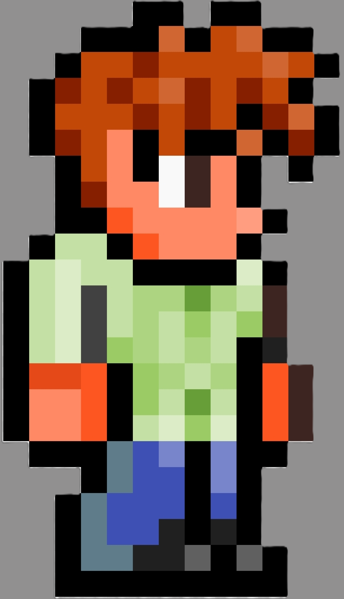

なんのサイト？

ここでは、私が購入した様々なエアガンをレビューしている。
それだけでなく、私が好きなアニメ、映画、ゲームなどに登場した
銃に近い再現のカスタムもしている。
もし、好きなアニメや映画等に出てくる銃を再現してみたい方はぜひ
参考にしてみてほしい。
カスタムは何から始めたらいい？
始めてカスタムする人は少し不安があると思う。
まずは簡単なカスタムをする。例えば、銃にはレールシステムがある。
スコープやライトを付けることができる。それだけでもカスタムしているといえる。
これなら値段も安く済むし、高い技術もいらないから
カスタム初心者の方はまずこれをやってみるといい。